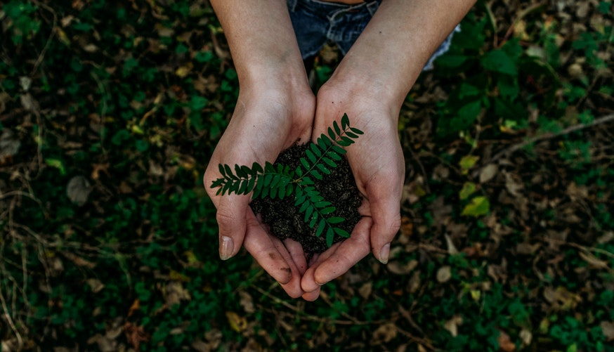

|  |
make EARTH as green
|
| uses | discription | banyan value |
The Banyan tree is still used as a source of shade in many villages. Each and every part of this tree has its own unique medical uses. The bark and seeds can be used as a tonic to maintain body temperature and treat diabetes. The roots can be used to strengthen your teeth and gums by brushing with them.t can grow in to the gaint tree covering several hectares. Medicinal uses :The Banyan tree also has several medicinal properties. Its leaf, bark, seeds and fig are used for the variety of disorders like diarrhea, polyuria, dental, diabetes and urine disorders. ... Its bark is used for making paper and ropes. |
|---|---|
| strength of roots |
Aerial roots are roots that are above ground. ... For support: Sometimes such roots are grown for support. Ivy plants have them to cling to structures, such as stone walls, or other trees. The Banyan tree (also known as strangler fig) grows them downward from branches into the forwst floor. |
| neem | 🌟🌟🌟🌟🌟 |
| banyan | 🌟🌟🌟🌟 |
| oak | 🌟🌟🌟 |
| sandal wood | 🌟🌟 |